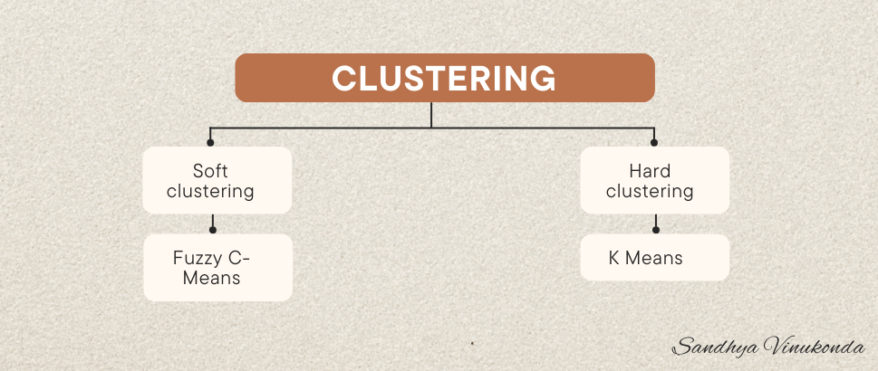
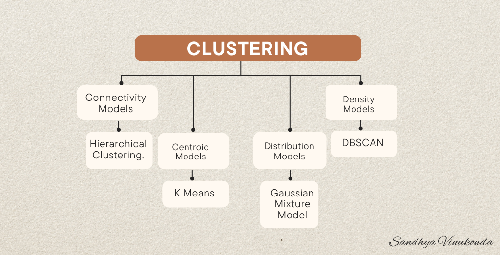
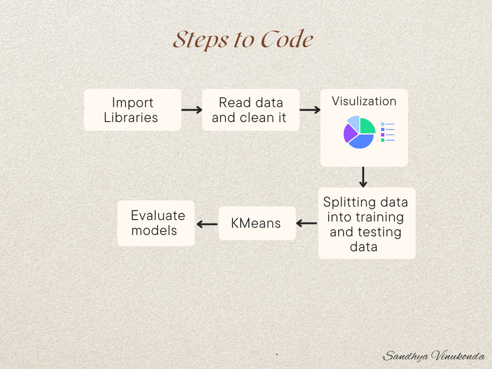
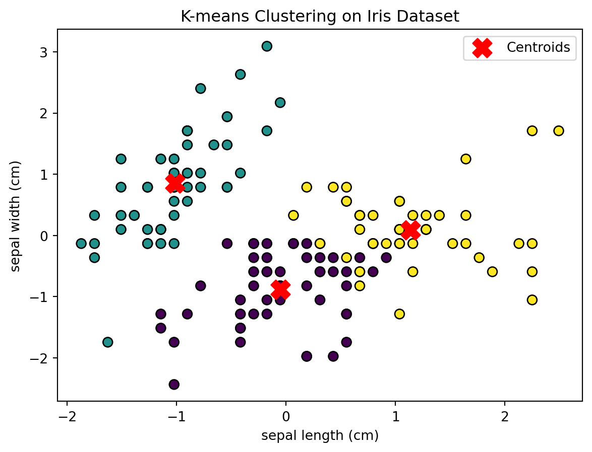

import numpy as np
import pandas as pd
import matplotlib.pyplot as plt
from sklearn.cluster import KMeans
from sklearn import datasets
from sklearn.preprocessing import StandardScaler
from sklearn.metrics import silhouette_scoreLet’s talk about a fascinating part of machine learning and unsupervised learning. In this world, there’s a standout technique known as clustering, where we work with data that doesn’t come pre-labeled. Instead, we group similar data points into clusters based on common traits or patterns. This blog will take you through the basics of clustering, its types, and zoom in on two popular clustering buddies: K Means and Hierarchical Clustering.
Understanding Clustering:
Clustering is like a detective trying to find hidden connections in a bunch of clues (data points). The cool thing is, no one is telling the detective what to look for – the algorithm figures it out on its own.

Types of Clustering:
Hard Clustering:
Imagine putting each data point into one exclusive group. That’s hard clustering for you. Classic example: K Means.
Soft Clustering:
Now, think of data points being chill and belonging to multiple groups with varying levels of closeness. That’s soft clustering. Fuzzy C-Means is a soft clustering star.
Different Clustering Models:

Connectivity Models: These algorithms look at how close data points are to each other. Example: Hierarchical Clustering.
Centroid Models: These focus on the center points of clusters. K Means is a big player here.
Distribution Models: Assume that data points follow a common pattern. Think of Gaussian Mixture Models (GMM).
Density Models: These spot clusters based on where data points crowd up. A famous one is DBSCAN.
Prominent Clustering Algorithms: K Means Clustering: It’s like dividing data into clubs based on the average characteristics of each group. Simple and efficient – a go-to for many.
Hierarchical Clustering: This one builds a family tree of clusters, like tracing your ancestry. It’s cool because it allows for nested or overlapping groups.
Difference Between K Means and Hierarchical Clustering: Here’s the lowdown on how K Means and Hierarchical Clustering differ:
Nature of Clusters: K Means makes clear-cut groups with no sharing allowed. Hierarchical Clustering creates a family tree where groups can overlap or nest.
Number of Clusters: K Means needs to know how many groups you want before it starts. Hierarchical Clustering is more flexible – it generates a tree, and you can decide how many groups later.
Computation Complexity: K Means is quicker with the calculations, good for big datasets. Hierarchical Clustering can take more time, especially with lots of data. Conclusion: In the unsupervised learning world, clustering is like a superhero revealing hidden patterns in data without anyone giving it a roadmap. Knowing the ins and outs of clustering, the different types, and the quirks of K Means and Hierarchical Clustering gives you a powerful toolkit for finding the stories hidden in your data. As technology races forward, the possibilities for unsupervised learning and clustering are endless, promising discoveries in fields from healthcare to finance.
Let’s Start Coding

- Import Libraries
- Read data and clean it
# Load the Iris dataset
iris = datasets.load_iris()
data = iris.data
features = iris.feature_names
target = iris.target
# Check for missing values
if np.any(np.isnan(data)):
print("Warning: Missing values found in the dataset.")
# Handle missing values as needed
# Standardize the features (important for K-means)
scaler = StandardScaler()
data_scaled = scaler.fit_transform(data)
# Check data types
print("Data Types:", data_scaled.dtype)Data Types: float64- Model : K Means
# Choose the number of clusters (K) - for the Iris dataset, K=3 makes sense due to the three classes
k = 3
# Apply K-means clustering
kmeans = KMeans(n_clusters=k, random_state=42)
kmeans.fit(data_scaled)
# Get the cluster labels and centroids
labels = kmeans.labels_
centroids = kmeans.cluster_centers_
# Add cluster labels to the original Iris dataset
iris_df = pd.DataFrame(data_scaled, columns=features)
iris_df['Cluster'] = labels
# Visualize the clusters (using only the first two features for simplicity)
plt.scatter(iris_df.iloc[:, 0], iris_df.iloc[:, 1], c=labels, cmap='viridis', edgecolors='k', s=50)
plt.scatter(centroids[:, 0], centroids[:, 1], c='red', marker='X', s=200, label='Centroids')
plt.title('K-means Clustering on Iris Dataset')
plt.xlabel(features[0])
plt.ylabel(features[1])
plt.legend()
plt.show()
# Evaluate the clustering using silhouette score
silhouette_avg = silhouette_score(data_scaled, labels)
print(f"Silhouette Score: {silhouette_avg}")C:\Users\gayat\AppData\Local\Programs\Python\Python311\Lib\site-packages\sklearn\cluster\_kmeans.py:1416: FutureWarning:
The default value of `n_init` will change from 10 to 'auto' in 1.4. Set the value of `n_init` explicitly to suppress the warning

Silhouette Score: 0.45994823920518635